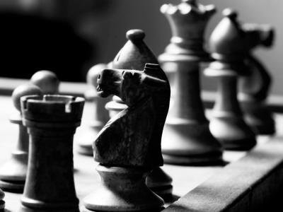

Szachy
Strategiczna gra planszowa rozgrywana przez dwóch graczy na 64-polowej szachownicy, za pomocą zestawu pionów i figur. Komitet Olimpijski uznaje szachy za dyscyplinę sportu. Szachy należą do gier z doskonałą informacją .




Figury
Przeciwnicy dysponują zestawami figur w odmiennych kolorach. W skład każdego z nich wchodzi szesnaście figur: król, hetman (potocznie zwany też damą, damką, królową lub królówką), dwa gońce (z niemieckiego nazywane czasami lauframi), dwa skoczki (zwane też popularnie końmi lub konikami), dwie wieże oraz osiem pionów (pionków).
Wartość figur szachowych może być absolutna lub względna. Przy założeniu, że wartość absolutna piona wynosi 1, względne wartości statyczne figur przedstawiają się następująco:
- hetman – 9 (według niektórych autorów 9,5 lub 10) punktów
- wieża – 5 punktów
- goniec – 3 punkty
- skoczek – 3 punkty
- król – nie ma przypisanej wartości ze względu na to, że nie można go wymienić, ale jego siłę szacuje się na około 4 punktów (od 3,5 do 5).
Ciekawostki
- Za kolebkę szachów uznaje się Indie. Gra była znana na dworze szacha Chosrowa I Anoszirwana w VI wieku.
- Wyliczono, że najdłuższa możliwa partia szachowa prowadząca do wygranej teoretycznie może mieć aż 5949 posunięć
- Najdłuższa oficjalna partia szachowa trwała 269 posunięć. Rozegrana została w 1989 roku pomiędzy Nikolicem i Arsovinem. Trwała ponad 20 godzin i zakończyła się remisem.
- Eric Knoppert w 1985 roku w ciągu 68 godzin rozegrał 500, 10-minutowych partii.
- Pierwotnie pola szachownicy miały jednolity kolor. Naprzemiennie jasne i ciemne kwadraty wprowadzono w 1090 roku.
- Najmłodszy mistrz świata miał 10 lat i 7 miesięcy a najstarszy 74 lata.